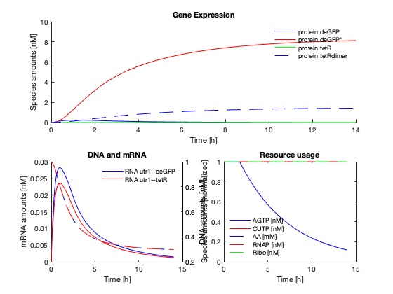

Tutorial III: Model details: Events, parameter scope and rules.
This tutorial is a continuation of the first two tutorials. We use the same negative autoregulation circuit, but now discuss more details about the model structure.
Vipul Singhal
Contents
Create the model
txtl_init; tube1 = txtl_extract('E2'); tube2 = txtl_buffer('E2'); tube3 = txtl_newtube('negautoreg'); % name the circuit txtl_add_dna(tube3, 'ptet(50)', 'utr1(20)', 'tetR(1200)', 1, 'plasmid'); txtl_add_dna(tube3, 'ptet(50)', 'utr1(20)', 'deGFP(1000)', 1, 'plasmid'); Mobj = txtl_combine([tube1, tube2, tube3]); [simData] = txtl_runsim(Mobj,14*60*60); t_ode = simData.Time; x_ode = simData.Data; txtl_plot(t_ode, x_ode, Mobj);
Current plot held
Simbiology events used to model ATP and GTP degradation.
The model has an event that sets the regeneration rate of AGTP (a species used to account for one unit of ATP and one of GTP) to 0 after a fixed period of time. The degradaton and regeneration reactions are:
degrx = sbioselect(Mobj.reactions, 'Reaction', 'AGTP -> AGMP'); regrx = sbioselect(Mobj.reactions, 'Reaction', 'AGMP -> AGTP');
with parameters AGTPdeg_rate and AGTPreg_varying respectively. These can be seen by typing in
get(degrx.KineticLaw) get(regrx.KineticLaw)
Note that these parameters are globally scoped, in that the local Parameters field in the KineticLaw is empty (degrx.KineticLaw.Parameters returns empty, and indeed the parameter is found at the model scope, which can be verified by typing in Mobj.Parameters. You may verify this for yourself. The globally scoped model parameters are
Mobj.Parameters
SimBiology Parameter Array Index: Name: Value: ValueUnits: 1 TX_elong_glob 12.418 2 TX_transcription_utr1_tetR 0.0101787 3 TX_NTPcons_utr1_tetR 3.09432 4 TL_elong_glob 23.826 5 TL_translation_tetR 0 6 TL_REScons_tetR 0 7 TX_transcription_utr1_deGFP 0.0121745 8 TX_NTPcons_utr1_deGFP 3.09233 9 TL_translation_deGFP 0 10 TL_REScons_deGFP 0 11 AGTPreg_varying 0.02 12 AGTPdeg_time 6529.5 13 AGTPreg_ON 0.02 14 AGTPdeg_rate 4.8663e-05
You might find it helpful to learn more about parameter scoping here.
And the kinetics of the degradation reaction are:
get(degrx.KineticLaw)
Annotation: ''
Name: ''
Notes: ''
Tag: ''
Type: 'kineticlaw'
UserData: []
Expression: 'MassAction'
KineticLawName: 'MassAction'
Parameters: [0×1 double]
ParameterVariables: {'Forward Rate Parameter'}
ParameterVariableNames: {'AGTPdeg_rate'}
Parent: [1×1 SimBiology.Reaction]
SpeciesVariables: {'MassAction Species'}
SpeciesVariableNames: {'AGTP'}
There are four parameters associated with these two reactions:
prm = Mobj.Parameters(end-3:end)
SimBiology Parameter Array Index: Name: Value: ValueUnits: 1 AGTPreg_varying 0.02 2 AGTPdeg_time 6529.5 3 AGTPreg_ON 0.02 4 AGTPdeg_rate 4.8663e-05
From time t = 0 to AGTPdeg_time seconds, the parameter AGTPreg_varying = AGTPreg_ON, but once time > AGTPdeg_time seconds, a simbiology event sets the the parameter AGTPreg_varying = 0. The degradation rate parameter AGTPdeg_rate is always at a constant value.
This timing based behavior is implemented using Simbiology events, and can be verified by typing in
Mobj.Events
SimBiology Event Array Index: Trigger: EventFcns: 1 time <= AGTPdeg_time AGTPreg_varying = AGTPreg_ON 2 time > AGTPdeg_time AGTPreg_varying = 0
Locally scoped parameters.
Most other parameters in the model are locally scoped. I.e., to view the parameters associated with most reactions, you must access it through the reaction's KineticLaw object, as shown below.
Mobj.Reactions(1)
SimBiology Reaction Array Index: Reaction: 1 [protein tetRdimer] + 2 aTc <-> [2 aTc:protein tetRdimer]
get(Mobj.Reactions(1).KineticLaw)
Annotation: ''
Name: ''
Notes: ''
Tag: ''
Type: 'kineticlaw'
UserData: []
Expression: 'MassAction'
KineticLawName: 'MassAction'
Parameters: [2×1 SimBiology.Parameter]
ParameterVariables: {1×2 cell}
ParameterVariableNames: {1×2 cell}
Parent: [1×1 SimBiology.Reaction]
SpeciesVariables: {'MassAction Species'}
SpeciesVariableNames: {1×3 cell}
Mobj.Reactions(1).KineticLaw.Parameters
SimBiology Parameter Array Index: Name: Value: ValueUnits: 1 TXTL_INDUCER_TETR_ATC_F 4.8404 2 TXTL_INDUCER_TETR_ATC_R 0.6551
and so on.
Simbiology Rules
Finally, Simbiology allows us to define rules that bind different components of the model together. In our model, rules are used to tie together the elongation rate parameter to the transcription rate, and to the resource consumption rate:
Mobj.Rules
gives
SimBiology Rule Array
Index: RuleType: Rule: 1 initialAssignment TX_transcription_utr1_tetR = TX_elong_glob/1220 2 initialAssignment TX_NTPcons_utr1_tetR = TX_elong_glob/1220*(305-1) 3 initialAssignment TL_translation_tetR = TL_elong_glob/400 4 initialAssignment TL_REScons_tetR = TL_elong_glob/400*(400-1) 5 initialAssignment TX_transcription_utr1_deGFP = TX_elong_glob/1020 6 initialAssignment TX_NTPcons_utr1_deGFP = TX_elong_glob/1020*(255-1) 7 initialAssignment TL_translation_deGFP = TL_elong_glob/333 8 initialAssignment TL_REScons_deGFP = TL_elong_glob/333*(333-1)
Looking at the first rule, for example, we see that the transcription rate of the tetR mRNA is the global elongation rate TX_elong_glob divided by the length of the RNA to be transcribed.